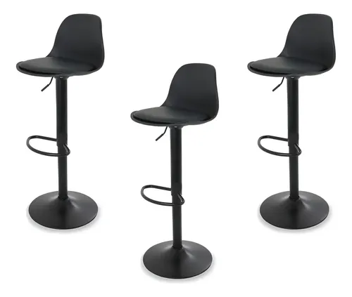

El utensilio que los chefs aman y temen: La mandolina

Hay dos tipos de personas en el mundo de la cocina: los que usan una mandolina para rebanar dos kilos de papas en menos de un minuto, y los que tienen una historia de terror en la sala de emergencias por no haber usado el protector de dedos. No hay punto intermedio.
La mandolina ajustable es uno de esos artefactos profesionales que llegó a las cocinas caseras para quedarse. Evaluamos un modelo robusto de acero inoxidable para entender si su velocidad y precisión justifican tener una cuchilla de afeitar gigante expuesta en la barra de tu cocina.
Uniformidad perfecta en segundos
El principal superpoder de la mandolina no es solo la velocidad (que es absurda), sino la consistencia. Si quieres hacer papas a la francesa, un gratinado (dauphinoise) o chips de manzana deshidratada, necesitas que cada rebanada tenga exactamente el mismo grosor. Si cortas con cuchillo y algunas papas quedan de 2mm y otras de 5mm, las delgadas se quemarán en el horno mientras que las gruesas quedarán crudas.
Con el modelo que probamos, ajustas la perilla a 3 milímetros, pasas la papa de arriba hacia abajo y en 10 segundos tienes unas 30 rebanadas traslúcidas e idénticas. Cortar cebolla en julianas perfectas para caramelizar o hacer ensalada de repollo fina como papel se vuelve una tarea trivial y hasta relajante.
Ahorra horas picando verduras. Mira esta mandolina profesional.
Ver opciones y preciosLa advertencia de seguridad obligatoria
Debemos ser muy claros en esto: las cuchillas en V o diagonales de estos aparatos están afiladas como bisturís quirúrgicos. Cortan las verduras sin que sientas resistencia, lo que significa que también cortarán la yema de tus dedos antes de que tu cerebro alcance a procesar el dolor.
Todos los modelos dignos de compra incluyen un "protector de manos" (hand guard) o un guante de malla de acero resistente a cortes. Tienes que usarlos siempre. Sin excepciones. Incluso si "solo es un pedacito de zanahoria". Si sigues esta única y sagrada regla, la mandolina es una herramienta maravillosamente segura.
Acero vs Plástico: ¿Cuál comprar?
Existen modelos baratos de plástico por todas partes. Hacen el trabajo un par de meses, pero eventualmente la cuchilla se desafila (y no se puede reemplazar) o el plástico se tiñe de naranja por las zanahorias y se debilita.
El modelo de acero inoxidable que analizamos tiene mucha más estabilidad sobre la tabla de picar, no se deforma al aplicar fuerza y, lo más importante, las cuchillas se pueden intercambiar (para hacer cortes waffle, julianas o rebanadas planas). Lavarla también es más fácil, un chorro de agua caliente suele bastar (jamás pases una esponja en contra de la cuchilla).
Conclusión final
Si eres de los que compra ensaladas de bolsa pre-cortadas porque te da pereza sacar la tabla y picar vegetales finamente, la mandolina pagará su costo en un mes. Hacer comida saludable, rápida y con presentación de restaurante se vuelve tan fácil que no hay excusa para no comer más verduras.
Cómprala, úsala para impresionar a tus invitados con ensaladas perfectas, pero por el amor a la gastronomía: usa el protector de dedos.